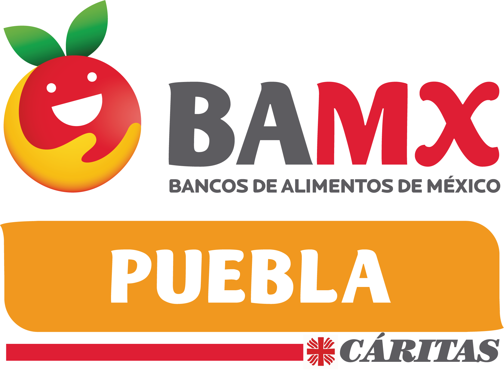
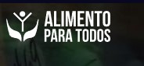
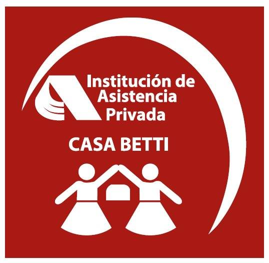
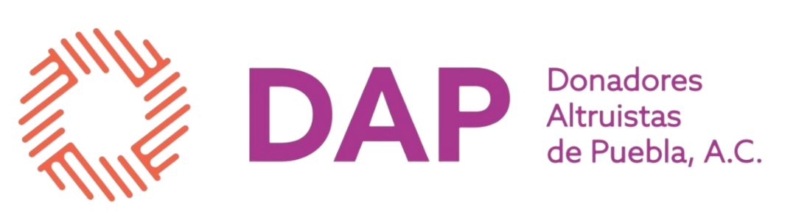

Aqui podras hacer una donación a cualquiera de las empresas
Te invitamos a elegir una de nuestras organizaciones asociadas para donar alimentos. Tu elección apoya a quienes más lo necesitan y nos ayuda a combatir el hambre. Juntos, podemos marcar la diferencia en la lucha contra las dificultades alimentarias.Banco de Alimentos Cáritas PueblaEs una Organización la cual combate el hambre y la desnutrición
en toda Puebla.
Los alimentos que se pueden donar son
• Alimentos procesados
• Congelados
• Abarrotes
• Perecederos: Frutas, verduras, embutidos, lácteos, pan, entre otros. Alimento Para Todos
Es una Organización la cual recauda y entrega alimentos a personas
y comunidades necesitadas, y trabajan para crear un futuro sin hambre
Lo que se puede donar en esta Organización es:
• Alimentos procesados.
• Perecederos: Frutas, verduras, embutidos, lácteos, pan, entre otros.
• Donaciones en efectivo. Casa Betti
Es una Organización el cual tiene como objetivo principal prestar
el servicio como casa hogar para adultos mayores.
proporcionando alojamientos, alimentos, atención médica entre otras cosas
Lo que se puede donar en esta Organización es:
• Alimentos no Perecederos.
• Medicamentos no caducados.
• Material de enfermeria.
• Productos de limpieza.
. Donaciones en efectivo. DAP(Donadores Altruistas de Puebla)
Es una Organización que promueve la donación altruista,
voluntaria y repetida de sangre.
Además brinda servicios de apoyo social a familias que tienen
que migrar temporalamente a la ciudad de Puebla para la
atención medica de un hijo.
Lo que se puede donar a esta Organización es:
• Donaciones en efectivo.
• Donación de sangre.
• Donación de comida.



